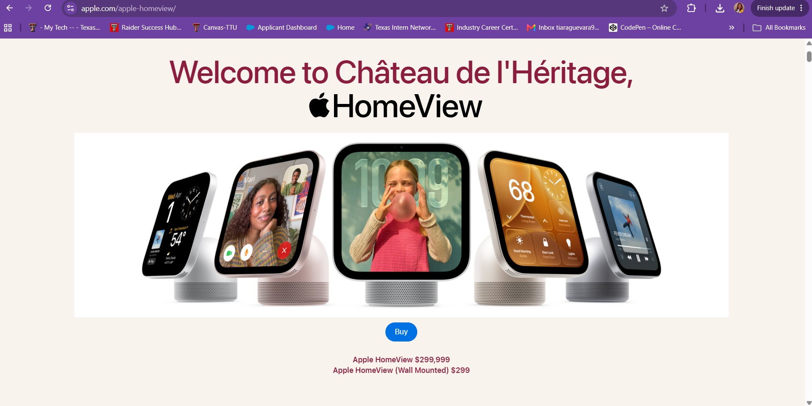

My Dev Tools Vandalism
I chose Apple's HomeView webpage because I liked its clean and modern design. I wanted to have some fun by giving the website a more luxurious appearance inspired by my interest in interior design.

What I "Vandalized"
Using Google Chrome's Developer Tools, I changed the main headline from "Welcome" to "Welcome to Château de l'Héritage." I also changed the text color to burgundy (#8B1E3F), the background color to cream (#F8F3EC), the font size to 64px, and the font family to Georgia. To make the page a little more entertaining, I increased the Apple HomeView price to $299,999.
I chose these colors and fonts because I love modern luxury design, and I wanted the webpage to reflect that style. The burgundy and cream combination gives the page a warmer and more elegant appearance compared to the original design.
This exercise helped me better understand how HTML and CSS work together. I learned that HTML controls the content of a webpage, while CSS controls how everything looks. I also learned how to use Developer Tools to experiment with a website without permanently changing it. It was interesting to see how a few simple changes could completely transform a familiar webpage.